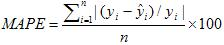
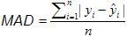
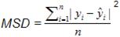
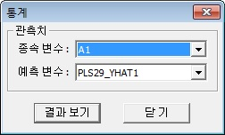

개요
-
회귀분석 결과의 타당성을 판단하기 위해 사용되는 방법에는 여러가지가 있습니다. 이 메뉴에서는 종속변수와 예측변수를 사용하여 R-square, MAPE(Mean Absolute Percentage Error), MAD(Mean Absolute Deviation), MSD(Mean Squared Deviation)을 제공합니다.
-
R-square(결정계수)
도출된 회귀식이 측정값들을 대표할만한가를 확인하는 것으로, 즉, 추정된 회귀선이 관측치들을 얼마나 잘 설명하는지를 검정하는 값입니다. 1에 가까울수록 회귀식이 데이터를 잘 설명하고 있음을 의미합니다.
-
MAPE (Mean Absolute Percentage Error)

-
MAD(Mean Absolute Deviation)

-
MSD(Mean Squared Deviation)

실행방법
-
[분석] - [정확도 측도] - [예측] 을 선택하면 [통계] 윈도우가 나타납니다.
창에서 관측치 변수와 예측 변수를 선택합니다. 결과 보기 버튼을 클릭하면 예측이 수행됩니다.

결과